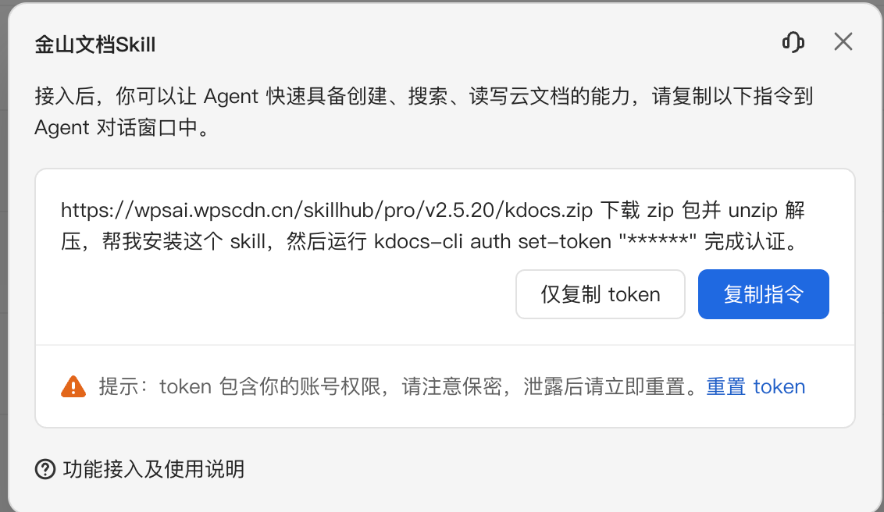

CHAPTER 5 · SKILL / API / AUTH
05
让别的 Agent，
也能使用我们的业务。
Skill 不复制业务逻辑，而是把能力说明、调用方式和约束交给外部 Agent；真正的数据仍由受保护的 API 提供。
为什么需要 Skill
同一个学业系统，不应该只能被自己的网页和内置 Agent 使用。
eino-oa 内部 Agent 可以在同一 Go 进程中调用 Tool。OpenClaw 等外部 Agent 不在这个进程里，它们需要先理解能力，再通过 HTTP API 访问数据。Skill 正是这层“可安装的使用说明”。
Skill 并没有创造新的业务能力
学生查询和成绩分析仍然由原来的 Service 与 API 完成。Skill 让另一个 Agent 知道：有什么能力、参数怎么传、结果怎么解释、哪些动作需要确认。
先分清四个概念
用一次“查成绩”理解四种角色。
Model 决定要查什么；Tool 是当前程序能执行的动作；API 是其他程序访问业务的接口；Skill 是告诉 Agent 如何使用能力的一组说明和资源。本章的 Skill 主要说明怎样调用成绩 API。
| 概念 | 负责什么 | 在本课程中的例子 |
|---|---|---|
| Model | 理解目标并决定下一步 | DeepSeek 等支持 Tool Calling 的模型 |
| Tool | 供当前 Eino Agent 调用的结构化动作 | query_student、query_grades |
| API | 跨进程提供受保护的业务能力 | GET /api/grades?student_id=1001 |
| Skill | 告诉外部 Agent 如何使用 API、脚本和资源 | skills/student-manage/SKILL.md |
最重要的边界：Skill 负责“说明怎样调用”，API 负责“真正执行并鉴权”。
Skill 的内容
一份好的 Skill，要让 Agent 能正确调用，也能正确停下来。
能力目录
列出查询学生、查询成绩和成绩分析等适用场景。
调用规则
写明方法、路径、参数、分页、返回结构和失败处理。
安全边界
说明只读与写入差异、确认条件、Token 使用和禁止事项。
# 成绩分析 Skill
## 能力
查询学生成绩、统计平均分、及格率和 GPA。
## 查询成绩
GET /api/grades?student_id={student_id}
## 约束
- 必须先确认 student_id
- 只能查询当前 Token 有权访问的数据
- 写入成绩前必须展示参数并获得确认仓库中的 skills/student-manage 和 skills/grade-analysis 已经采用这种思路，把 REST API 用法交给外部 Agent。
安装与认证
Skill 可以像工具包一样快速接入 Agent。
下面的金山文档 Skill 展示了一个直观过程：把安装指令发给 Agent，Agent 下载并解压 Skill，再通过本地 CLI 保存 Token。之后，它就能根据 Skill 说明使用文档能力。

https://wpsai.wpscdn.cn/skillhub/pro/v2.5.20/kdocs.zip
下载 zip 包并 unzip 解压，帮我安装这个 Skill，
然后运行 kdocs-cli auth set-token "******" 完成认证。Token 包含账号权限。真实 Token 只输入到可信的本地 CLI 或密钥系统，不能放进 Skill 文件、代码仓库、截图和普通日志。
API 与 Token
说明书告诉你怎么调用，访问凭证决定你能否调用。
本章的 Token 指访问凭证，相当于服务端发的通行证；它与模型计费使用的 Token 不是同一概念。Scope 指凭证允许的动作范围，例如只允许查询成绩。
当前鉴权边界
eino-oa 已经提供 REST API 与 Skill 文档，但当前版本没有完整的 Bearer Token 鉴权。生产系统还需要补齐 Token、Scope 与审计链路。
req, err := http.NewRequestWithContext(ctx,
http.MethodGet,
baseURL+"/api/grades?student_id=1001",
nil,
)
if err != nil {
return err
}
req.Header.Set("Authorization", "Bearer "+token)
resp, err := http.DefaultClient.Do(req)sequenceDiagram
participant O as OpenClaw
participant S as Skill
participant API as Go API
participant Auth as 鉴权
participant DB as 业务数据库
O->>S: 读取能力、参数和约束
S-->>O: GET /api/grades?student_id=1001
O->>API: Authorization: Bearer token
API->>Auth: 校验 Token、Scope 与数据范围
Auth-->>API: 允许访问
API->>DB: 查询成绩
DB-->>API: 结构化数据
API-->>O: JSON 结果
O-->>O: 继续推理并生成回答| Token 设计 | 原因 |
|---|---|
| 最小权限范围（Scope） | 查询成绩的 Token 不应自动获得删除学生权限 |
| 有效期 | 泄露后的影响应被限制在可控时间内 |
| 可撤销与轮换 | 发现泄露时可以立即失效并替换 |
| 审计主体 | 服务端要知道是哪位用户、哪个 Agent 发起调用 |
安装简单，不代表可以随便安装
Skill 也需要来源、版本和权限治理。
| 检查项 | 安装前要回答 |
|---|---|
| 来源 | 是否来自可信发布者，下载地址是否可能被替换？ |
| 版本 | 是否固定明确版本，升级时能否看到变更内容？ |
| 脚本 | 是否会执行 Shell、读取本地文件或上传数据？ |
| 权限 | Token Scope 是否小于等于 Skill 真正需要的范围？ |
本页总结
- Tool 面向当前 Eino Agent，Skill 面向外部 Agent，API 承载真实业务。
- 安装 Skill 可以很简单，但来源、版本和脚本必须经过检查。
- Skill 不是权限通行证；Token、Scope 和数据权限全部由服务端验证。
- Token 应具备最小权限、有效期、撤销、轮换和审计能力。
- 外部 Agent 仍然遵循“推理 → 执行 → 观察”的循环。
一个业务能力同时被网页、内置 Agent 和外部 Agent 使用时，API 契约与鉴权就是共同边界。
小练习
为“只读查询成绩”写一段 Skill。
写清查询用途、学生编号参数、返回字段和失败时怎么办。再设计两个请求：一个有读取权限，一个没有读取权限。
完成标准：Skill 写着“只读”还不够，服务端必须拒绝无权请求；安装了 Skill 不意味着已经获得业务权限。